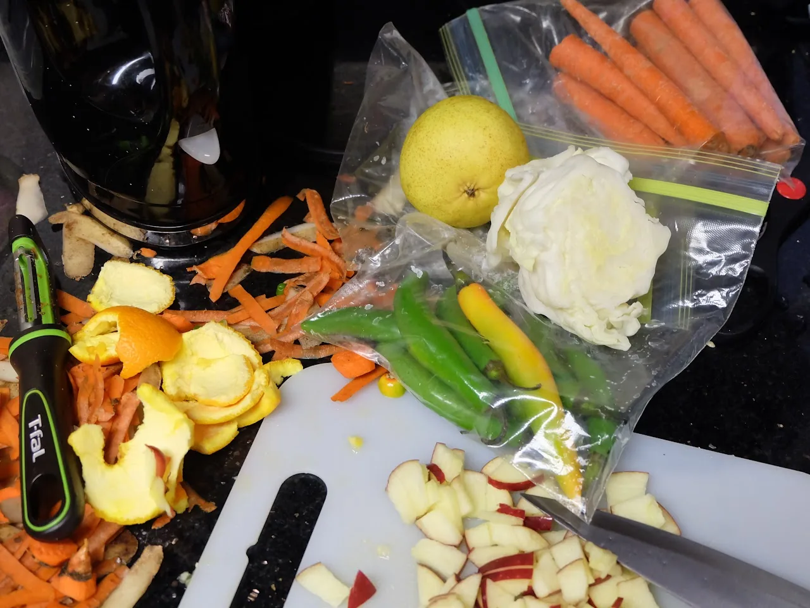

Live → Blog
October 29, 2019

I think of my kitchen as many things: a laboratory for experimenting with new flavors, a playground to set the creative child within me free, and a sacred space where I get to be present. (Alternative text: a sacred space where I practice mindfulness). Yesterday while studying for an exam in my Fundamentals of Data Science class, I decided to take a break and go make food. After all, my data science ambitions are very medium term in nature and my house husband goals are more long term. (Alternative text: If I fail to make it as a data scientist, I hope I can convince some working (or wealthy) woman that her life would be better if she had me as her house husband). The past few weeks have been quite hectic and as such I have not been able to use up all my fresh produce on time as planned. So I found myself with red apples (that I don't really like), aging serrano peppers, and a lonely orange. I do not know where this idea came from, but I decided to rewrite Cole's Law.
Growing up, salad was not something to be had often. It was something reserved for special occasions. For example, Independence day, Christmas, and weddings. Maybe on a special Sunday here and there, we would have it. And it was always a set of salads. You either made all of them or none of them. First was the most basic of them all, coleslaw salad. There were three variants of this, one with only cabbage, another with grated carrots added, and the other with dried raisins in the mix. I was not a fan of coleslaw, perhaps because all we could afford at home to eat on most days was cabbage. So naturally I was not enthused over any of the derivates of cabbage. The second was beetroot salad. There were two variants of this and both involved boiling the beetroot first. Variant 1 was diced beetroot with mayonnaise as the dressing. (Sometimes you could be creative and add onion to make Variant 1.1). Variant 2 was grated beetroot with vinegar as the dressing. I am a fan of both. The third in this family of salads was the potato salad. This one requires very beautiful potatoes. Not all potatoes can make a potato salad. The basic way is to boil the potato and use mayonnaise as the dressing. Extensions to this included adding peas and boiled eggs. The fourth was butternut salad. You basically cooked the butternut in a perfect amount of oil for a perfect amount of time to the perfect sweetness. Only my aunt and sister could be trusted to nail this triple perfection. One day I will learn. The final was chakalaka. I will not attempt to describe it. I will have to make it and share with you all this special salad. Of course in recent years, lettuce based salads and other uncooked veggies salads have been showing up back home. Personally, I still refuse to eat those - even though I live in an area where they are trendy. Why in the world would I eat goat feed? In any case, now that I have described the background information - think of it as a literature review of this experiment - we can proceed to the salad I made.
I said I did not know where the idea to make salad came from and I might have lied a bit. A few weeks ago I was chatting with one of my close friends, he is an African man of similar upbringing. He told me that he has started to eat salad. Traitor! I think that is where the inspiration to make salad came from. I tend to be easily influenced by my friends and family's dietary choices. I took the cabbage and sliced it as thinly as we often do for coleslaw. Then, worried that my serrano peppers might go bad before I use them, I grabbed three of them and chopped them semi-finely and added them to the mix. I love spicy food, so if I am going to add salad to my diet it better have a kick. Next, I peeled the last orange from the bag of oranges I bought in September. Then I sliced it and added the tiny bits into the mix. I then cut an apple and a pear as finely as I could. The fruits were added partly to use them up since I was not eating them as regularly as I should, but also to balance the pepper in the salad. Then I generously added mayonnaise and mixed everything together. It was...you may say...quite delicious!
In all, the salad went really well with the boiled potatoes and carrot served with boiled beef. I got to give my aging ingredients a new purpose in the after life and gifted myself with the joy of good food. I suspect I am going to continue experimenting with adding salads to my diet. But most of them are going to be cooked salads because I am not a goat. I do not eat raw leaves. So, as you can see, I will be a successful house husband and soccer dad. What is cooking in your kitchen? What accidental mixing of ingredients has turned well? Please share with me at my email: ramarea at live dot com.
← Return to Blog